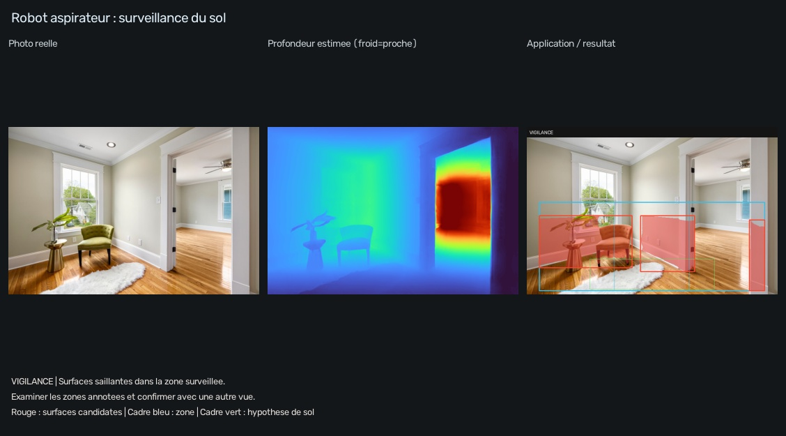
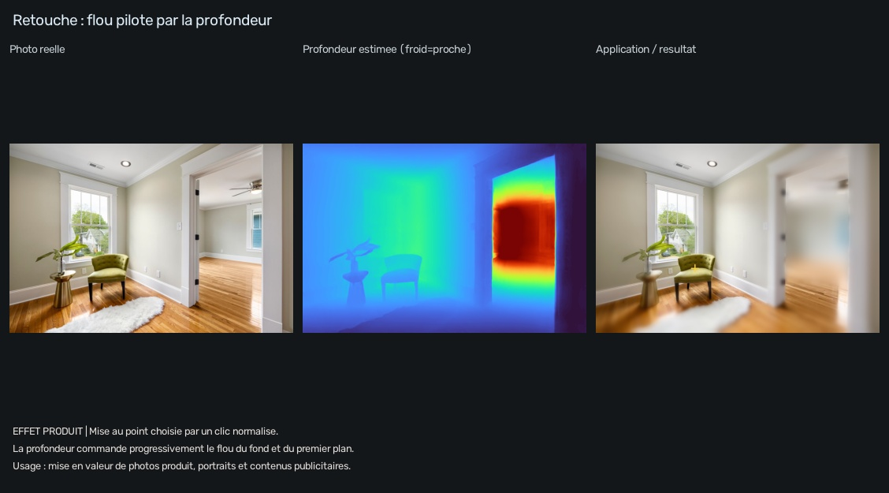
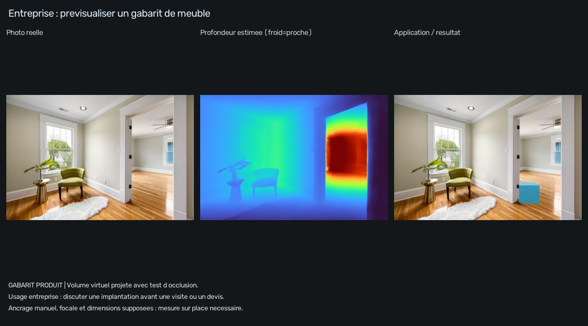
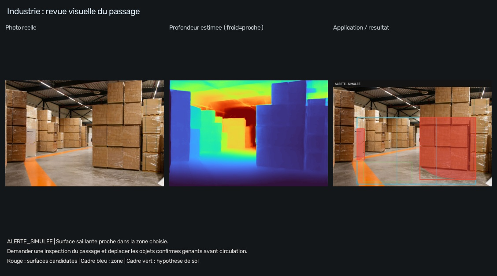

Perception routiere monoculaire

ALERTE_SIMULEE — Dans le simulateur : suspendre la progression et demander une confirmation humaine.
Ouvrir les resultats · Explications et commandesPhotos et videos reelles → profondeur estimee → resultat visuel et action proposee. Cinq demonstrations sur CPU, avec les modeles deja installes, sans entrainement.
Navigation : perception hors ligne et alertes simulees. Aucun vehicule ou robot pilote. Les distances et la focale sont estimees ; aucun resultat ne garantit un passage libre.
Guide PowerShell · Sources et credits · Resultats observes et prochaines etapes
ALERTE_SIMULEE — Dans le simulateur : suspendre la progression et demander une confirmation humaine.
Ouvrir les resultats · Explications et commandes
VIGILANCE — Examiner les zones annotees et confirmer avec une autre vue.
Ouvrir les resultats · Explications et commandes
EFFET_PRODUIT — Ajuster --focus X Y pour choisir le sujet a conserver net.
Ouvrir les resultats · Explications et commandes
GABARIT_PRODUIT — Comparer visuellement cet emplacement puis mesurer et calibrer avant tout achat.
Ouvrir les resultats · Explications et commandes
ALERTE_SIMULEE — Demander une inspection du passage et deplacer les objets confirmes genants avant circulation.
Ouvrir les resultats · Explications et commandesExtrait analyse image par image. Vigilance et alertes a confirmer ; pas de suivi d objets ni de conduite autonome.
Les douze vues et leurs actions